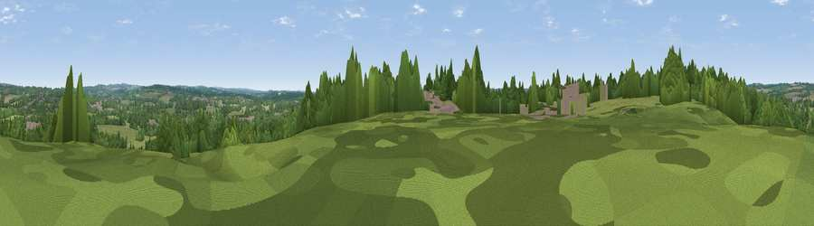

Viewpoint near Otterbourne
#42609 in England · top 72% of its area beats it · near OtterbourneWhere it is
The exact computed spot (SU 45675 22375). Click the marker for map links.
The view, rendered

A 360° render of this exact spot computed from the terrain model, tree cover and land cover — summer colours, afternoon light, calibrated against photographs of famous viewpoints. Real trees, hedges and buildings will differ in detail.
The panorama
Grey silhouette: terrain skyline in each direction (720 bearings, Earth curvature and refraction included). Dashed green: skyline with trees (+15 m) and buildings (+8 m) as obstacles. Blue strip: how far the ground is visible on each bearing.
Where the view opens
Wedge length = distance to the farthest visible ground on that bearing (vegetation-aware). Rings at 10, 25 and 50 km.
What fills the view
50% woodland · 35% grassland · 8% built-up · 7% cropland
Angular shares of the visible panorama (visual magnitude), not map area. Landscape diversity 0.48 (0–1 Shannon).
Key numbers
More beautiful places nearby
The staircase of upgrades: each row has a higher view potential than everything closer. Driving times are estimates from straight-line distance, calibrated against real road routing — check an actual route before setting out.
| Place | Direction | Drive | Score |
|---|---|---|---|
| Cranbury Park | NW · 2 km | ~4 min | 30.1 |
| Viewpoint near Compton | N · 4 km | ~9 min | 31.0 |
| Cockscomb Hill | ENE · 5 km | ~10 min | 39.9 |
| Violet Hill | NW · 7 km | ~14 min | 45.5 |
| Viewpoint near Chilcomb | NE · 7 km | ~14 min | 48.4 |
| Deacon Hill | NE · 7 km | ~15 min | 56.7 |
| Viewpoint near Sparsholt | NW · 9 km | ~17 min | 56.8 |
| Viewpoint near Chilcomb | NE · 9 km | ~17 min | 63.3 |
50.99896, -1.35048 · source: screening · position refined by local search. Computed location — check access rights before visiting.